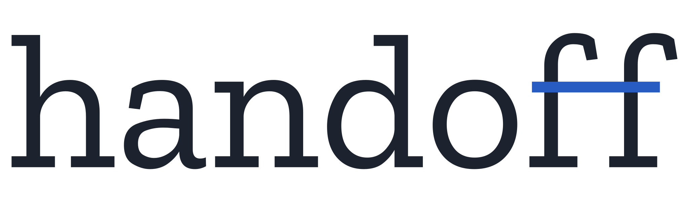
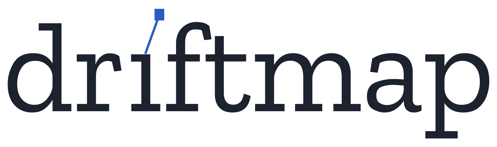
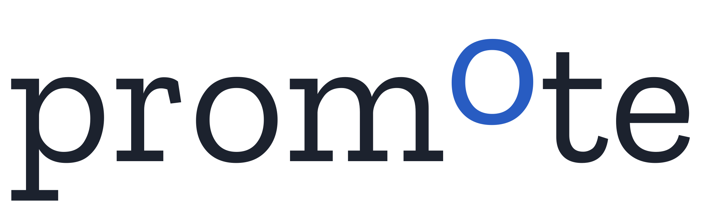

Stop your AI agent from re‑reading your project every new session.
Don't spend today's tokens explaining yesterday's work. In the next session, the agent starts with where you stopped and what comes next.
/plugin marketplace add sulabo/batonFor Claude Code and Codex. Needs git and python3. Free and open source (MIT).
same setup with handoff injection off
$ cat src/*.ts README.md
src/levels.ts.One run each; cost is an API-price equivalent. In real use, tokens aren't lower yet.
85%of the cost was spent after the conversation passed the dashed line.
What the agent re-reads on every call
When the conversation passes 250K and then 450K tokens and the turn did work since the last handoff (edits, file-writing commands, or delegated edits), baton has the agent save a handoff so you can start fresh (Claude Code). A recount of the author's sessions found that from around this size, starting fresh usually costs less. How much it saves in real use isn't measured yet.
The problem
Most of a session's cost comes after it gets long.
Every call sends the whole conversation so far again, so the same work costs more the longer a session runs. A new session is light again, but the agent first digs through old notes to find where it left off.
41 of 42 → 3 of 11Sessions that opened with a progress question in which the agent reopened the handoff within its first 5 calls. Before → after installing baton; some read only part of it (3 before, 2 after).
Real use, 08-31 to 10-04 before, 10-19 to 11-20 after. Eleven sessions show a direction, not a size. In the same sessions, input tokens over the first 5 calls rose from 339–404K to 446–494K (weekly medians). The numbers are in "Measured so far" below.
How it works
The work carries over to the next session.
-
1 · end of a session
When work ends, the agent leaves a one‑page handoff.
Saving it runs a check for secrets and gaps.
In Claude Code, baton asks the agent to update it after 3 or more files are edited; you can also say "write a handoff". A hook (a small script) runs the check.
Saved HANDOFF.md · demo reposhortened[baton] The HANDOFF.md you just wrote has handoff-check problems. Fix them and save again:
- line 6: looks like an API token — remove it or write it generically (~/, <key>)
- line 7: looks like an absolute home path — remove it or write it generically (~/, <key>)
- 9,277 chars — over the 8,700-char limitThe value it found is never printed. -
2 · next session
The next session starts from that page.
Ask "where were we?" and the agent gets it before opening any file.
Once per session, with its date and the commits since.
New session · demo reposhortenedYouwhere were we?[baton] Below is this repo's full HANDOFF.md. No need to reopen it. Treat it as a hypothesis, check the one or two claims the next step depends on, then continue with the next action. For Owner decisions, use the recommended default if reversible; ask only about irreversible ones.[baton] This handoff is as of 2026-11-11 (11 days ago). 3 commits since then are not in it — start withgit log --oneline -3 -- . -
3 · after code changes
When code changes, baton flags what to re‑check.
A new session opens with one line: how much to re‑check.
The concept map below (
CONCEPTS.md) keeps each concept's files and last-checked commit; baton counts git commits./drift · demo reporeal output[baton] 2 concepts in the concept map need another look (1 unchanged). For details: /drift# Concept Status Verdict 1 lives agrees needs a re-check — 1 commit 2 score agrees fresh 3 levels not built yet needs a re-check — no baseline Summary: re-check 2 · fresh 1 · rule concepts 0
Concept map
Re‑check only the concepts that changed. Skip the rest.
For each name your project uses, like "lives" or "score" in a game, the map lists its files and when it was last checked (CONCEPTS.md). A new session gets this list first. Each name usually carries one of four marks.
- freshIts files haven't changed since the check. Skip it.
- N commitsN commits touched its files since the check. Look again.
- no baselineNo check is recorded yet, so it isn't treated as unchanged.
- doc commitsThe code is the same, but the docs that describe it changed.
1. lives — starting number of lives · files: src/lives.ts
2. score — points per coin · files: src/score.ts
3. levels — level list, still empty · files: src/levels.ts
Measured so far
Fewer tokens in snapshot runs. Not yet in real use.
All numbers come from one person's own repositories. Real use means everyday sessions; snapshot runs repeat the same task on a fixed repo state, changing one condition. Conditions and sources: the results table in the README.
Fewer input tokens on a progress question with the handoff injected. Median turns went from 5–6 to 3.
Snapshot runs, 3 repos, 3–5 runs per condition.
More input tokens when the handoff was loaded for an unrelated task.
Snapshot runs, 1 repo, 5 runs. That is why it goes in only when you ask.
Average cost per session: $1.00 with no handoff, $0.68 with the whole page. With a summary card it was $0.88–1.05; the agent reopened the file in 5 of 5 runs.
Snapshot runs at API-price equivalent, 1 repo, 5 runs per condition, 2026-09. The whole-page and card runs came after the baseline, not alternating with it. This is why baton injects the whole page.
First-call context in real use. It did not go down; it went up. Other plugins' fixed context grew in the same period, so baton's share can't be separated.
A separate problem: the same handoff went in 269 times across 39 sessions (32 of them at a session's start). It now goes in once per session; that fix isn't measured yet.
Weekly medians, 08-31 to 10-04 before install, 10-19 to 11-20 after; handoff count 10-04 to 11-19.
Next to other tools
Keep using /compact. baton handles the new session.
Loads the handoff only when you ask to continue
It never goes into messages from subagents or other sessions.
Rules check it, not the agent
It also warns when lines from the last committed version are gone, so a failed approach or a decision doesn't drop out silently.
Flags where decisions, code and docs disagree
For example, a decision that isn't built yet shows up on its concept.
We read other tools' docs on 2026-11-21 and 11-22; none documented these three. Full comparison
What comes with it
Seven tools, one word each.

Writes the one-page handoff and checks what should move to
DECISIONS.md.Ask “write a handoff”

Builds the concept map,
CONCEPTS.md, and keeps it fresh.Ask “build a concept map”
Lists only the concepts to re‑check, then stops.
/drift
Finds rules that survived several days and decisions that quietly dropped out.
/promoteRun once after install. Suggests thresholds and the private words to block.
/baton-setupChecks that the plugin is ready in this repo.
/baton-doctorShows what baton’s rules decide for a prompt. Changes nothing.
/baton-explain
Slash commands work in Claude Code only. On Codex, ask for the skill by name.
Install
Two commands, then ask "where were we?"
/plugin marketplace add sulabo/baton/plugin install baton@batonRun inside Claude Code, then open a new session and run /baton-doctor.
codex plugin marketplace add sulabo/batoncodex plugin add baton@batonCodex 0.155 or later. Codex runs plugin hooks only after you mark them as trusted.
Before you install.
Does baton send anything over the network?
No. The hooks read your git history and local files, and write only under ~/.cache/baton/.
Does it save tokens?
In snapshot runs, yes: 40–54% fewer input tokens on progress questions. In real use, not yet. The conditions are in "Measured so far" above.
How is this different from /compact or /resume?
/compact summarizes the current conversation and keeps going; /resume reopens an earlier one. Both continue a single conversation. baton is for opening a new session: when the context passes 250K and 450K tokens in a turn that did work since the last handoff (edits, file-writing commands, or delegated edits), it has the agent save a handoff so you can start fresh (Claude Code), and gives the next session one page you can read and edit. In our test at a task boundary (a scripted session in the baton repo, 5 runs each), both carried the work over correctly after the handoff fix, and the handoff run cost about 1.7× as much as the /compact run (median, with the prompt cache counted as warm; 1.2× on the raw reported cost). A second repo was dropped on 2026-11-25 because its /compact runs had also received a handoff. Our pre-registered rule needs two repos, so it gives no verdict.
Can I use it in English?
Yes. Messages are in English unless your locale is Korean; set BATON_LANG=en to choose English. English requests start the skills, and handoff loading answers phrases such as "where were we" or "pick up where we left off". Add more trigger words with /baton-setup.
Do I need DECISIONS.md?
No. Whether a concept's files changed comes from git history alone. Without a decision log, baton can't catch "decided but not built yet", and concepts without files aren't tracked.
Does it change my files?
Yes, HANDOFF.md can change. In Claude Code, after 3 or more files are edited, or when the conversation passes 250K and 450K tokens in a turn that did work since the last handoff (edits, file-writing commands, or delegated edits), baton asks the agent to update it; set BATON_HANDOFF_AUTO=off to get a suggestion instead. CONCEPTS.md is written only when you ask. No hook edits files itself, and nothing is committed.